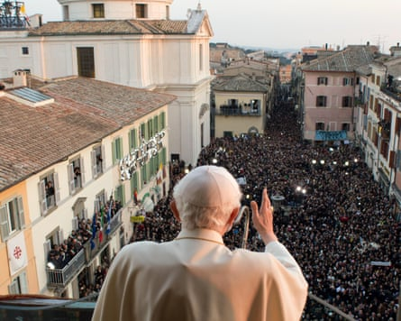
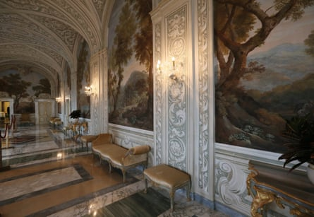
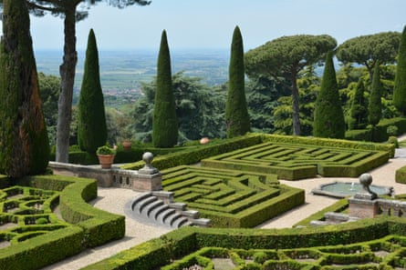
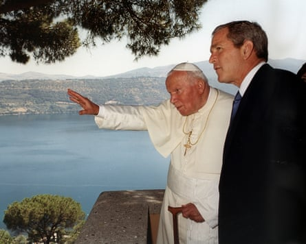
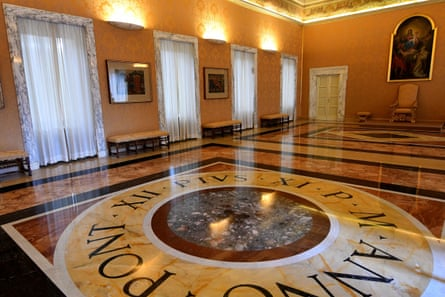

W hen, soon after being elected in 2013, Pope Francis broke from longstanding Vatican tradition by choosing not to spend his summer holiday in the papal retreat of Castel Gandolfo, a sleepy hilltop town overlooking a lake about an hour south of Rome, residents were taken aback.
One shopkeeper, Anna, compared the perceived rejection to a divorce, while another said it slightly ruptured a sense of belonging.
Now, after 12 summers without a pontiff among them, their spirits have been restored by Pope Leo, elected in early May after the death of Francis, opting to revive Castel Gandolfo as the go-to papal holiday destination.
Leo arrives on Sunday for a two-week stay and will return in mid-August for a few more days of rest and relaxation.
“To say we are happy would be an understatement,” Anna said. “Not only because his presence generates some activity but because this is a papal town – it is the air that we breathe.”
Benedict XVI giving his last blessing as pope from the window of the pontiff’s summer residence of Castel Gandolfo in 2013.Photograph: AP
The Vatican’s connection with Castel Gandolfo began in 1596 when it bought a castle in the centre of the town from a noble Roman family. Thirty years later it became established as the papal summer bolthole after undergoing renovations commissioned by Pope Urbano VIII, the first pontiff to holiday in the town in a quest to flee the stifling heat of Rome.
The tradition continued almost uninterrupted until Francis, who tended to shun the Vatican’s pomp and privilege. He visited Castel Gandolfo on only three occasions, and all during the first months of his papacy – twice to preside over mass and once to see his predecessor, Benedict.
The Apostolic Palace in Castel Gandolfo.Photograph: Mondadori Portfolio/Archivio Marco Piraccini/Marco Piraccini/Mondadori/Getty
Francis spent his summers in his humble Vatican abode. But he did help to transform Castel Gandolfo from a pilgrim site into more of a tourist destination after the papal palace became a museum in 2015. Visitors can wander through its Renaissance-era gardens and vast rooms, which contain garments worn by popes dating back to the 16th century, and marvel at the views over Lake Albano from the windows of the papal bedroom.
“We did feel abandoned by Francis and the first few years were difficult,” said Maurizio Carosi, who with his son owns a bar and gift shop opposite the palace. “But now we’ve moved on from a pilgrim town to a tourist one – so even if Francis didn’t come, he gave us a spiritual charge.”
The palace will remain a museum while Leo and his accompanying Swiss Guards reside in another newly renovated property within its grounds.
The Apostolic Palace gardens in Castel Gandolfo.Photograph: Sandro Barbagallo/Musei Vaticani
The excitement in the town is palpable as it prepares for the American pontiff’s arrival. Gardeners were preening the lawns within the palace on Friday morning while workers were putting the finishing touches to the pope’s holiday home and tidying up its tennis court so that Leo can indulge his passion for the game.
As with pontiffs over history, the break will not only be about resting. Leo is expected to host audiences and rosaries for the local residents and carry out Vatican duties.
Pope John Paul II and George W Bush looking out over Lake Albano from Castel Gandolfo in 2001.Photograph: Arturo Mari/AP
“Just because they’re on holiday, they don’t necessarily stop working,” said Tadeusz Rozmus, the parish priest of San Tommoso dal Villanova church. “Pope John Paul II wrote encyclicals here and others have hosted heads of state. Castel Gandolfo is a much more pleasant place for them to reside in summer as they can escape the heat of Rome, and with the way things are going, summers are only going to get hotter.”
Alberto De Angelis, the mayor of Castel Gandolfo, has readily embraced the papal return, especially as it is expected to help fill the town’s coffers. “Knowing that Pope Leo has listened to the wishes of our community, which for years has been waiting to see a pope in its square, fills our hearts and souls with joy,” he wrote on social media.
A view of the Pontiff's private apartments, now open to tourists as a museum.Photograph: Alberto Pizzoli/AFP/Getty Images
The town’s smattering of gift shops are yet to be filled with souvenirs featuring Leo’s image. “Everyone is asking for his image but I heard he doesn’t want to see his face on glasses, plates, candles or whatever,” Carosi said, claiming that whatever was being sold in Rome was bootleg. “Leo souvenirs have not been officially authorised.”
Carosi was born in Castel Gandolfo and recalls popes of the past greeting people in the square and shaking hands.
When it comes to Pope Leo, he said his character was “yet to be discovered”. “But I know he’ll be happy here,” he added. “He’ll have a view of the lake, will breathe the fresh air and will find himself among good people. Being an athletic pope, he will also have the possibility to enjoy long walks in the gardens.”